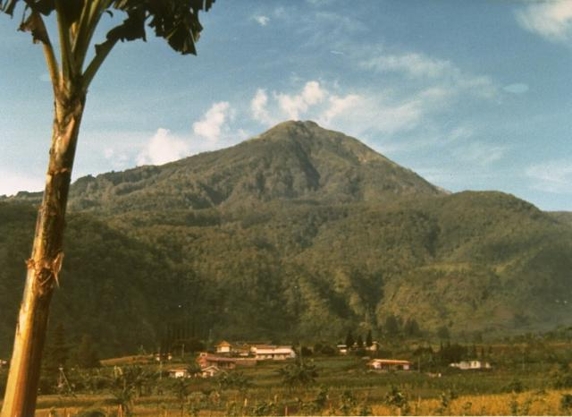
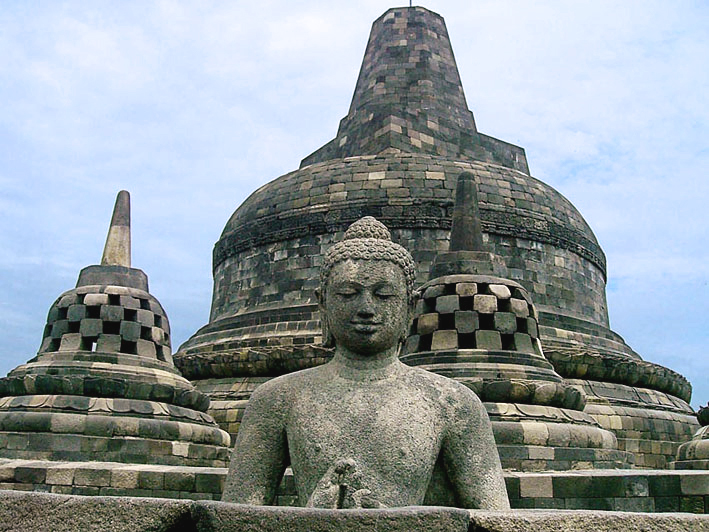

Colloseum : ada di Romawi
Colloseum : ada di Romawi
Tempat-tempat yang indah di dunia
Inilah tempat-tempat wisata dunia yang banyak dikunjungi oleh wisatawan tiap tahunnya.
Ikuti link pada gambar untuk melihat secara detail.
 Gunung Lawu : di propinsi Jawa Timur
Hawaii : terletak di Benua Amerika
Colloseum : ada di Romawi
Candi Borobudur : Di Jawa Tengah 
Tersedia perjalanan wisata dengan harga mulai 100$ US